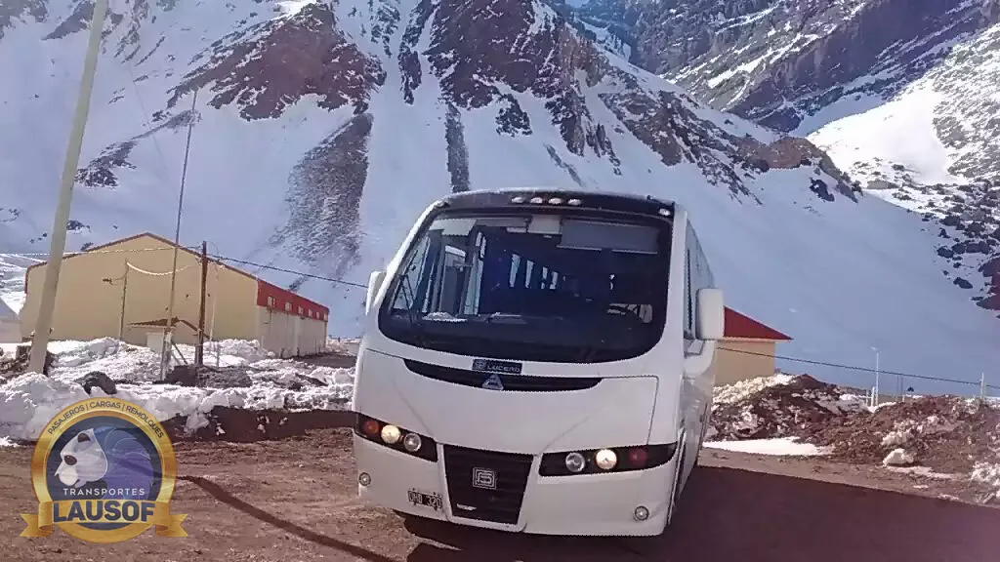

Viaje internacional · Argentina – Chile
Traslado privado de Salta a San Pedro de Atacama, por el Paso de Jama.
Lo llevamos de Salta a San Pedro de Atacama, en Chile, por Purmamarca, la Cuesta de Lipán, Salinas Grandes y el Paso de Jama. Viaja en una combi de 19+1 plazas o en una camioneta 4x4, con chofer profesional, solo ida o ida y vuelta. Tramitamos el permiso de viaje internacional de la unidad y le decimos qué documentos lleva cada pasajero.
El camino
De Salta a San Pedro, tramo por tramo
Son unos 590 km. Salimos por la ruta 9 hacia Jujuy y Purmamarca, subimos por la ruta 52 hasta la Puna y cruzamos a Chile en Jama. Del lado chileno, la ruta 27 CH baja hasta San Pedro de Atacama. Todo el camino es asfaltado.
El cálculo de manejo sin paradas da cerca de 8 horas. En la práctica es un viaje de día completo: hay que sumar las paradas, el control de frontera y el ritmo que pide la altura.
| Tramo | Distancia aproximada, altura y lo que hay que saber |
|---|---|
| Salta – Purmamarca | Unos 180 km por la ruta 9 y Jujuy. Purmamarca es la última localidad grande antes de la subida: buen lugar para cargar agua y estirar las piernas. |
| Purmamarca – Salinas Grandes – Susques | La ruta 52 sube por la Cuesta de Lipán, que pasa los 4.100 m (4.170 m en el punto más alto), y cruza Salinas Grandes, a unos 3.450 m. Susques está a 3.896 m. |
| Susques – Paso de Jama | Altiplano abierto hasta el complejo fronterizo de Jama, a 4.200 m. Desde Purmamarca son unos 250 km. Es el punto más expuesto al viento y a la nieve. |
| Jama – San Pedro de Atacama | Unos 160 km por la ruta 27 CH. El camino desciende unos 1.700 m: San Pedro está a unos 2.500 m de altura. |
Distancias y tiempo de manejo: cálculo aproximado sobre datos de OpenStreetMap (motor de rutas OSRM), consultado el 10/10/2026. Alturas: Visit Argentina (Lipán, Salinas Grandes, Susques), Unidad de Pasos Fronterizos de Chile (Jama) y Aduana de Chile (San Pedro de Atacama).



La frontera
El Paso de Jama: horarios y cierres
En Jama funciona un complejo integrado, del lado argentino, donde los organismos de los dos países hacen el control en el mismo edificio. Se hace la salida de Argentina y la entrada a Chile en una sola parada, con migraciones, aduana y el control agrícola chileno (SAG).
Los horarios que publican los dos gobiernos no coinciden y cambian según la temporada. El 10/10/2026, la página oficial argentina mostraba atención de 9:00 a 19:15, y la chilena, de 8:00 a 20:00 (hora de Chile). Por eso planificamos el cruce de día, con margen, y revisamos el horario el día anterior a la salida.
El paso cierra por nieve y viento blanco, en invierno y también en verano. En agosto de 2026 estuvo cerrado desde el 11 por nevadas, viento blanco y temperaturas bajo cero, con tramos de la ruta 27 CH intransitables. En enero también hubo cierres por el invierno altiplánico. Si el paso está cerrado el día del viaje, le avisamos antes de salir y reprogramamos la fecha con usted.
Estado en vivo: Paso Jama en argentina.gob.ar (Gendarmería, Vialidad Nacional y Servicio Meteorológico) y estado diario de los complejos fronterizos de Chile. Cierre de agosto de 2026: El Tribuno de Jujuy, 22/08/2026. Consultado el 10/10/2026.
Documentos y SAG
Qué lleva cada pasajero
- Argentinos: DNI vigente o pasaporte.
- Ciudadanos de países del Mercosur y asociados (por ejemplo, Chile, Bolivia, Brasil, Uruguay, Paraguay, Perú, Colombia o Ecuador): la cédula o el documento de identidad que reconoce el acuerdo del Mercosur, o el pasaporte, salvo que su nacionalidad necesite visa.
- Resto de las nacionalidades: pasaporte vigente. Chile da al turista una permanencia de hasta 90 días; algunas nacionalidades necesitan una autorización previa o visa del consulado chileno, que se tramita antes del viaje.
- Al entrar a Chile la Policía de Investigaciones registra la estadía en la Tarjeta Única Migratoria. Conviene guardarla hasta salir del país.
- Menores de edad: para salir de Argentina, el permiso de viaje depende de con quién viajen. Lo explica Migraciones en su página de autorización de viaje para menores.
Control agrícola (SAG). La ley chilena obliga a declarar bajo juramento todo producto de origen vegetal o animal que se lleve encima, en el equipaje o en el vehículo. La fruta fresca no se permite, y la fruta y verdura, los lácteos, la miel y la carne, fresca o elaborada, están entre los productos más controlados. No declarar se multa. Nuestro consejo: no lleve comida fresca y declare cualquier alimento, aunque esté envasado.
Fuentes oficiales, consultadas el 10/10/2026: documentos de viaje del Mercosur (Migraciones), Permanencia Transitoria (Servicio Nacional de Migraciones de Chile), visas para ingresar a Chile (Cancillería de Chile), autorización de viaje para menores y Declaración Jurada SAG. Los requisitos cambian: antes de viajar, confírmelos con el consulado de su país.
Paradas e ida y vuelta
Qué se puede sumar al viaje
Es un traslado privado: las paradas las elige el grupo. Las que más se piden en este camino son el cerro de los Siete Colores en Purmamarca, el mirador de la Cuesta de Lipán, Salinas Grandes y el pueblo de Susques. Si quiere sumar alguna, díganos cuál al pedir la cotización y la incluimos en el horario.
- Solo ida: lo dejamos en su alojamiento de San Pedro de Atacama.
- Ida y vuelta: lo buscamos en San Pedro en la fecha que acuerde y lo traemos de regreso a Salta, o al aeropuerto de Salta o de Jujuy.
- Viaje combinado: San Pedro como parte de un recorrido más largo por Salta y Jujuy, o junto con Bolivia. Lo armamos a pedido.
Sobre la hora: entre septiembre y abril, Chile continental usa el horario de verano y tiene la misma hora que Argentina; el resto del año está una hora atrás. Lo tenemos en cuenta para el horario del cruce y de la búsqueda.
Cómo reservar
Lo que necesitamos para cotizar y para el permiso
Para cotizar, envíenos la fecha, cuántos viajan, dónde los buscamos, si es solo ida o ida y vuelta, y las paradas que quiere hacer. Con eso le respondemos con el precio, normalmente en el día.
Cada viaje al exterior lleva un permiso propio de la CNRT, que se pide al menos 72 horas antes de la salida e incluye la lista de pasajeros. Por eso, al confirmar le pedimos el nombre completo y el número de documento de cada persona, y conviene reservar con al menos una semana de anticipación. La unidad viaja con su seguro con extensión a Chile.
- Combis de 19+1 plazas y camionetas 4x4, con chofer profesional
- Habilitación CNRT N.º 60284 vigente
- Agencia de turismo habilitada
- Permiso de viaje internacional tramitado por nosotros, para cada viaje
- Emitimos factura A
- Grupos más grandes: más de una unidad, con el mismo responsable
Preguntas frecuentes
Lo que se pregunta antes de cruzar a Chile
¿Cuánto se tarda de Salta a San Pedro de Atacama?
El manejo sin paradas ronda las 8 horas para unos 590 km. Con las paradas y el control en Jama, es un viaje de día completo: salimos temprano para cruzar la frontera de día.
¿Qué pasa si el Paso de Jama está cerrado?
Revisamos el estado del paso el día anterior y antes de salir. Si está cerrado por nieve o viento, no salimos: le avisamos y buscamos con usted la fecha más cercana en que el paso esté habilitado.
¿La altura afecta?
El camino pasa los 4.000 m en la Cuesta de Lipán y en Jama, a 4.200 m. Muchas personas lo sienten. Subimos sin apuro, paramos, y conviene tomar agua y comer liviano. Si alguien tiene una condición de salud, consulte a su médico antes del viaje.
¿Puedo llevar comida al cruzar?
Lo más simple es no llevar comida fresca. Chile no permite la fruta fresca y controla la verdura, los lácteos, la miel y la carne. Cualquier alimento de origen vegetal o animal se declara en la Declaración Jurada del SAG; no declararlo se multa.
¿Necesito visa para entrar a Chile?
Depende de la nacionalidad. Los argentinos y los ciudadanos del Mercosur y asociados entran con su documento de identidad. El resto entra con pasaporte, y algunas nacionalidades necesitan una autorización previa del consulado chileno. Confírmelo antes de viajar en la página de visas de la Cancillería de Chile.
¿Publican precios?
No. El precio depende de la fecha, de cuántos viajan, de si es solo ida o ida y vuelta y de la unidad que hace falta. Envíenos esos datos y le respondemos con la cotización.
¿Otras preguntas sobre los traslados en Salta y Jujuy? Están en la página de turismo en Salta y Jujuy.
Quiénes somos. Lausof SRL es una empresa familiar de transporte de Salta. Hacemos transporte de pasajeros desde 2010, con habilitación CNRT N.º 60284. Conozca la empresa.
Relacionados: Viajes internacionales · Traslado de Salta a Uyuni (Bolivia) · Turismo en Salta y Jujuy
Actualizado el 10/10/2026. Los horarios de frontera y los requisitos de ingreso los publican los gobiernos de Argentina y Chile, y pueden cambiar.
¿Viajamos a San Pedro de Atacama?
Envíenos la fecha, cuántos viajan, dónde los buscamos y si es solo ida o ida y vuelta. Le respondemos con la cotización en el día.
Cotizar por WhatsApp